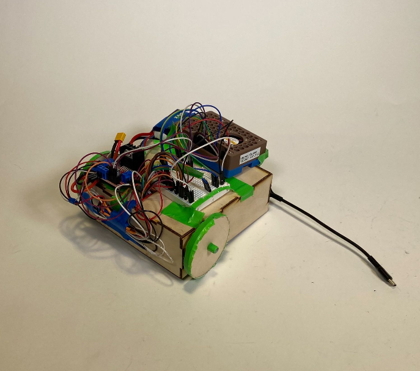
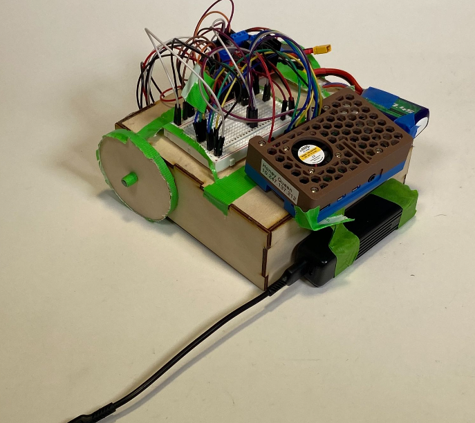
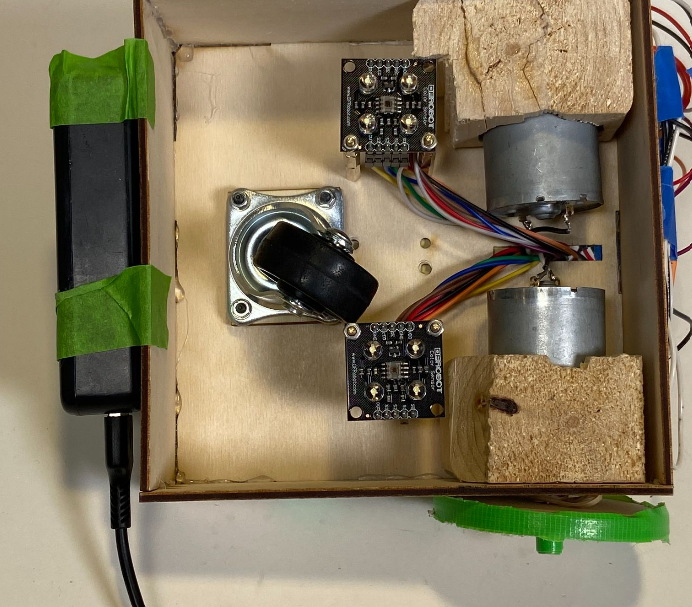
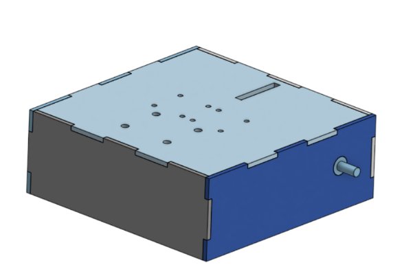
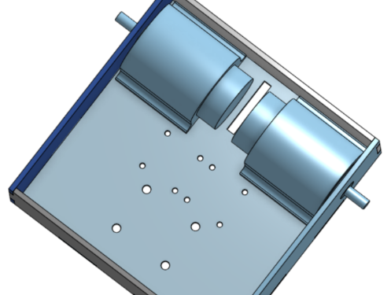
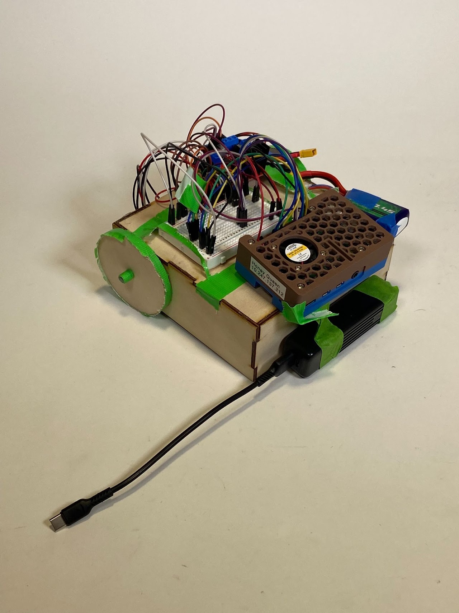

Homework3: Star Road



Goal:
Design and build a robot that can follow one or more colored lines using a color sensor.
Code:
https://github.com/egold01/ME35_LineFollower/tree/main
Solution:
I worked with Salvatore Novak to design a robot that uses two color sensors to follow a red line using proportional control.
We initially struggled to figure out exactly how we wanted to implement the PID control because it was conceptually confusing using PID with a problem that seems more like a binary problem (is the robot on or off the line). We eventually decided to take advantage of the fact that the color sensors that we were using (the DFRobot Fermion: TCS3200 RGB Color Sensor (Breakout)) do output arbitrary numeric RGB values of the colors that they are seeing. We decided that the sensors would be positioned one on each side of the the line and that they would be looking for "non-line" which was the color white. White reflects all light colors so we expected to have have values for RGB when the sensors were on "non-line" and have lower values when the sensors were on a line, creating an error that we could plug into the PID control and eventually convert to a PWM duty cycle for each wheel of the robot.
In order to attempt to simplify the interactions between the sensors and motors we decided that we would have one sensor and one motor on each side of the line and that the sensor and motor on different sides of the line would be a pair - when a sensor saw the line the opposite wheel would start to turn faster moving the sensor off of the line and turning the robot to follow the line.
We made a rough mock up of the robot structure in Onshape CAD software (see images below), mocked up and successfully tested the code for one sensor-motor pair, and started the assembly and testing process...



Unfortunately, our robot didn't work...
After some initial debugging of the code, we got our robot to follow fairly straight lines but on sharp turns the sensor that was supposed to get the robot to turn would overshoot the edge of the line and either get stuck on the line or just completely cross the line before the robot completed its turn operation to follow the line.
We managed our time a little poorly on this assignment so we didn't get the chance to adjust the PID and other variables and more thoroughly debug this issue.
However, I did learn several interesting things from this project:
- How PID control works
- Tuning a PID control is very difficult (even just the proportional bit)
- Getting a color sensor to consistently read values for RGB is very difficult and getting two of them to do the same thing and interact with each other is even more difficult. (At the end of the day we may have just wanted to use one color sensor.)